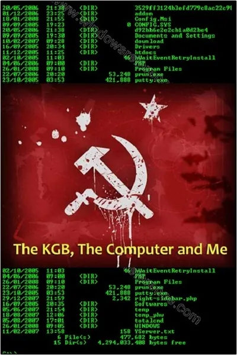

Документальный · 1990 · Документальный
Клиффорд Столл, астроном, ставший системным администратором лаборатории в Беркли, обнаруживает бухгалтерскую нестыковку в 75 центов и в ходе расследования выходит на хакера, продающего данные КГБ. Столл сам рассказывает эту историю — дело «Яйцо кукушки», ставшее одной из первых задокументированных киберопераций. Это живая лекция о том, как проводятся расследования на основе анализа логов — за десятилетия до появления термина «реагирование на инциденты».
Clifford Stoll, an astronomer turned lab system administrator at Berkeley, spots a 75-cent accounting error and, untangling it, finds a hacker selling data to the KGB. Stoll narrates the film himself, retelling the 'Cuckoo's Egg' case — one of the first documented cyber operations. A living lecture on how investigations work through logs — decades before the term 'incident response'.
← Вернуться в каталог IT Movies